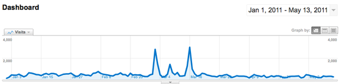

More Interested in the Asides
So how did the term go, you ask? Here's what traffic on this site looked like:

The three spikes in March where we had up to ten times our usual 250-a-day visitors were the articles on tuple spaces, literate programming, and graph layout–in other words, the articles that weren't about teaching scientists and engineers basic computational skills. As the man said, "So it goes."